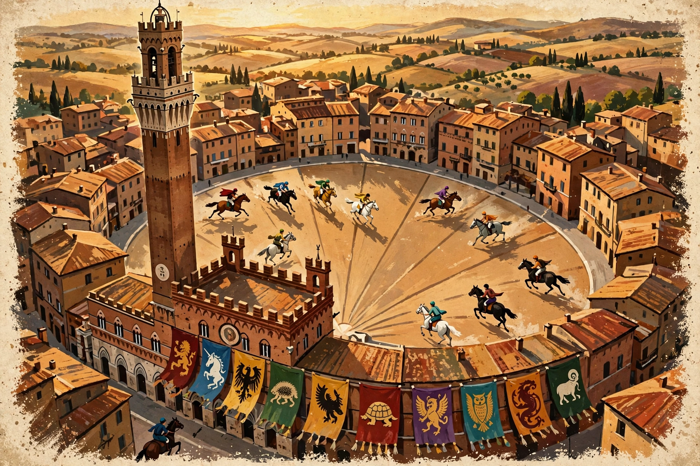

Illustrazione originale per questa demo — Piazza del Campo, la conchiglia di tufo dove si corre dal 1633.
Quattro secoli di corse, un solo archivio
Dal primo Palio «alla tonda» del 1633 alla Carriera del 2026: questa demo ricostruisce in forma moderna una piccola parte dell'archivio che Orlando Papei cura da decenni su ilpalio.org — oltre venticinquemila pagine no profit, senza pubblicità, autorizzate dal Consorzio per la Tutela del Palio di Siena, costruite a titolo gratuito e per pura passione.
Qui trovi l'albo delle corse in forma leggibile da telefono, sei schede complete che attraversano i secoli, tre Contrade raccontate e una ricerca che funziona su tutto il contenuto della demo. È un assaggio: l'archivio vero, con statistiche, documenti, curiosità e bibliografia, è e resta su ilpalio.org.
Le ultime Carriere
L'Aquila torna dopo 34 anni
Giovanni Atzeni detto Tittia su Diodoro domina dal primo all'ultimo metro e riporta il drappellone nel Casato. L'ultima vittoria aquilina era del 3 luglio 1992, con Aceto.
Leggi la scheda → 18 agosto 2026 · AssuntaIl Nicchio e il «cappotto» di Tittia
Il Nicchio, su Anda e Bola ancora con Tittia, vince dopo 28 anni (ultima nel 1998): per il fantino è la tredicesima vittoria e il cappotto personale nello stesso anno.
Vai all'albo →Esplora la demo
Albo delle corse
L'elenco delle vittorie dal Seicento a oggi, con sei schede complete: 1633, 1713, 1802, 1837, 1992 e 2026.
Apri l'albo →Le Contrade
Onda, Tartuca e Aquila: colori, simboli, territorio e storia delle tre protagoniste di questa demo.
Le schede →Cos'è il Palio
Le due date, la tratta, le prove, la mossa, il cavallo scosso e il drappellone: la festa spiegata in una pagina.
Leggi →Albo delle corse
Le vittorie riconosciute dal Comune di Siena, dal primo Palio alla tonda ai giorni nostri. Le sei corse con la dicitura «Scheda completa» si aprono con vincitore, Contrada, cavallo, fantino e racconto; le altre sono le righe d'albo essenziali.
Avvertenza d'archivio: per i Palii anteriori al 1692 i verbali della Biccherna non esistono e le attribuzioni poggiano su cronache e studi successivi — Orlando Papei li ha analizzati documento per documento nel volume I Palii con i cavalli fino al 1691 (ilpalio.org, 2016). L'archivio completo delle corse, anno per anno, è su ilpalio.org.
Le Contrade
Siena è divisa in diciassette Contrade: popoli, territori, chiese e musei dentro le mura. In ogni Palio ne corrono dieci — le sette che non hanno corso l'anno precedente e tre estratte a sorte. In questa demo ne raccontiamo tre, le protagoniste delle schede corsa.
Tutte le diciassette
Su ilpalio.org ogni Contrada ha la sua sezione completa: vittorie, fantini, cavalli, statistiche e curiosità.
Cos'è il Palio
Non è uno spettacolo per turisti: è la festa di una città che si riconosce nelle sue diciassette Contrade. La corsa dura poco più di un minuto; la festa dura tutto l'anno.
Le due date
Il Palio si corre due volte l'anno in Piazza del Campo: il 2 luglio, in onore della Madonna di Provenzano (Palio di Provenzano), e il 16 agosto, in onore della Madonna Assunta (Palio dell'Assunta). Le piogge possono rinviarlo di un giorno o due — è successo spesso, anche nel 2024, nel 2025 e nel 2026.
Le corse a cavallo a Siena sono attestate dal Duecento con il «Palio alla lunga», corso in linea attraverso la città. Il primo Palio «alla tonda», in Piazza, è documentato nel 1633: quell'anno, per la peste, i barberi delle corti italiane non poterono correre e la Balìa fece gareggiare i cavalli delle Contrade. Il Palio di luglio diventa annuale dal 1659; quello di agosto si stabilizza nel 1802, finanziato dal Comune.
Come si arriva alla corsa
L'estrazione. Delle diciassette Contrade ne corrono dieci: sette di diritto (quelle che non hanno corso l'edizione corrispondente dell'anno prima) e tre estratte a sorte in Palazzo Pubblico.
La tratta. I cavalli vengono selezionati, visitati e assegnati a sorte alle dieci Contrade. È il cavallo, non il fantino, il cuore della festa: ogni Contrada lo accoglie nella propria stalla, lo veglia e lo porta in chiesa per la benedizione.
Le prove. Nei giorni che precedono la Carriera si corrono sei prove, compresa la «provaccia» della mattina del Palio. Il fantino, professionista ingaggiato dalla Contrada, monta a pelo, senza sella.
Il Corteo Storico. Prima della corsa, centinaia di figuranti in costume quattro-cinquecentesco sfilano intorno al Campo: alfieri con le bandiere, tamburini, il Carroccio e i cavalli delle Contrade.
La Carriera
Nove cavalli si allineano fra i canapi nell'ordine estratto a sorte e tenuto segreto; il decimo, la «rincorsa», entra di corsa e dà di fatto il via. L'allineamento — la mossa — può durare minuti o un'ora, fra trattative e rivalità. Poi: tre giri del Campo ricoperto di tufo, in senso orario, per circa novanta secondi.
Vince il cavallo: se il fantino cade, il cavallo «scosso» può vincere da solo, e la vittoria è valida in tutto e per tutto — è accaduto molte volte, anche di recente (l'Oca all'Assunta 2023, con Zio Frac). Alla Contrada vincitrice va il drappellone, il grande stendardo dipinto per quella edizione, che entra nel museo della Contrada. I festeggiamenti durano settimane.
Piccolo glossario
- Barbero
- il cavallo da Palio (dal nome dei cavalli berberi delle antiche corse).
- Nonna
- la Contrada che da più tempo non vince; dopo l'agosto 2026 è la Chiocciola.
- Cappotto
- vincere entrambi i Palii dello stesso anno (di una Contrada o, «personale», di un fantino).
- Scosso
- il cavallo che prosegue la corsa senza fantino.
- Mossa
- l'allineamento ai canapi e la partenza; la gestisce il mossiere dal verrocchio.
- Drappellone
- lo stendardo dipinto assegnato alla Contrada vincitrice, detto anche «il Palio».
Per approfondire: la sezione storica e le statistiche complete dell'archivio di Orlando Papei su ilpalio.org, autorizzato dal Consorzio per la Tutela del Palio di Siena.
Cerca nell'archivio demo
Ricerca a testo pieno sulle pagine di questa demo: corse, Contrade e spiegazioni. Prova con «Tittia», «scosso», «1713» o «Tartuca».
Nell'archivio dal vivo la ricerca indicizza oltre 25.000 pagine: ilpalio.org.